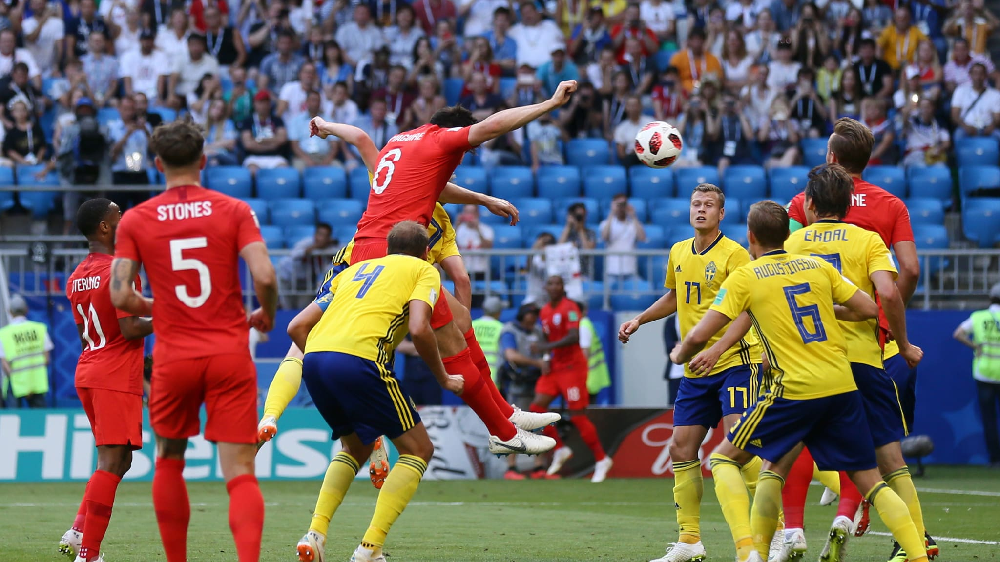

France vs Uruguay
Bermain di Nizhny Novgoord Stadium, Prancis melaju ke semifinal sejak Piala dunia 2006 lalu setelah mengalahkan Uruguay 2-0. Uruguay yg sepanjang turnamen baru kebobolan 1 gol, terpaksa menambah jumlah kebobolan menjadi 3. Prancis unggul terlebih dahulu lewa gol Varene dimenit ke 40 dan memajang keunggulan lewat gol Greizmann pada menit ke-61.
Brazil vs Belgia
Dipertandingan lain, juara terbanyak piala dunia, Brazil harus keluar dari piala dunia setelah kalah 1-2 melawan Belgia. Bermain di Kazan Arena, Belgia udah unggul 2-0 dibabak pertama lewat gol bunuh diri Fernandiho di menit ke-13 dan gol De Bruyne pada menit ke-31. Sedangkan Brazil baru mencetak gol pada menit ke-76 lewat gol Augusto. Sayangnya, Brazil gagal menyamai kedudukan di menit-menit akhir dan Belgialah yg lolos ke semifinal
Swedia vs Inggris

Samara Arena menjadi saksi melajunya Inggris ke semifinal untuk pertama kali sejak Piala dunia 1990 setelah mengalahkan Swedia 2-0. Gol pertama dicetak oleh Maguire yg mencetak gol international pertamanya pada menit ke-30. Sedangkan gol kedua dicetak oleh Alli dimenit ke 59. Pickford mencatatakan clean sheet dalam pertandingan tersebut untuk mengunci kemenangan Inggris.
Rusia vs Kroasia
Kroasia lagi-lagi melaju ke babak selanjutnya lewat adu penalti setelah mengalahkan tuan rumah Rusia dengan skor 4-3. Bermain di Fisht Stadium, Rusia dan Kroasia bermain imbang 1-1 di babak pertama lewat gol Cheryshev dimenit ke 31 sebelum dibalas oleh Kramiric 8 menit kemudian. Karena berakhir imbang di waktu normal, pertandingan dilanjutkan extra time yg membuahkan 2 gol dimenit ke 101 oleh Vida dan 115 oleh Fernades. Skor menjadi 2-2. Di adu penalti, Rakitic kembali menjadi pahlawan karena mencetak poin yg membuat Kroasia menang adu penalti dengan skor 4-3
Tim yg lolos ke Semifinal
Prancis

Belgia

Inggris

Kroasia